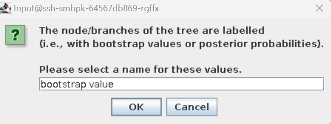

# For bacterial sequences
grep "product=16S ribosomal RNA" [gff annotation file] > [subset_16S.gff]
# Select first 16S annotation
head -n 1 [subset_16S.gff] > [subset_first_16S.gff]
# For mitochondrial sequences
grep "ID=gene_cox1" [gff annotation file] > [subset_coi.gff]Constructing and interpreting phylogenies
Below are four approaches for constructing phylogenetic trees from a single gene, multiple genes, core genome genes, and whole genome SNP phylogeny. Remember that we are processing the sequence data to obtain biological interpretations, so remember what question you are trying to answer. Don’t get lost in the terminal with typing commands: step back and think about the bioinformatic process to get to the end goal.
For all the approaches, the overarching process follows the same principle steps:
Extract (and if appropriate concatenate) the target nucleotide sequence(s) from your samples. The approach will differ depending on if you are using a single gene, multigene, pan-genome or SNP approach. You should include a reference / outgroup sequence
Create an alignment of the nucleotide sequences from all samples. MAFFT is a commonly used linux aligner. Remember to ensure your sequences are trimmed and orientated in the same direction !!
Construct a phylogeny. RAxML-NG is a great very scalable phylogenetic program. You may wish to optimize the phylogenetic model you use - there are specific programs to do this but we will not cover these in this course.
Visualize your tree. Figtree is a good program for visualizing trees on linux platform, but you could equally download you trees and visualise using MEGAX.
Single gene phylogeny
For many purposes you need to simply identify the species from which an assembly was derived. The commonest way to do this is to construct a phylogeny based on a single gene. The gene used differs by kingdom. For Bacteria and Archaea people use 16S rRNA whilst for most Eukaryota people use mitochondrial CoI (Cytochrome Oxidase I). There are a few domain-specific loci used, for instance algal people use the large subunit of ribulose bisphosphate carboxylase (RbcL), whilst the fungal communities use the internal transcribed spacer (ITS) between nuclear ribosomal genes.
If a outgroup is not provided, use NCBI Genbank or the European Nucleotide Archive to download an appropriate outgroup. Remember that an outgroup should be the same phylogenetic marker (and in the correct orientation), from a species that is phylogenetically distinct but still related to your study group. For example, if you are studying dog species use a CoI from a Cat.
Use bedtools to extract out your phylogenetic marker sequence (e.g. 16S or CoI) from your assembled and annotated genome.
Yesterday you used bedtools to extract the 16S rRNA gene sequences from your prokaryote genomes (and maybe also to extract the CO1 genes from your mitochondria).
Exercise: Extracting 16S genes
- Move your extracted 16S rRNA gene sequence into the directory of 16S rRNA reference genes provided.
Here’s a revision of how you extract you 16S rRNA sequence:
Extract the 16S rRNA gene from the genome assembly using the subset_16S.gff annotation file (contains the co-ordinates for the start/stop positions). Depending on how the assembly graph was made, the sequence may be in the opposite orientation (reverse complement). To account for this we need to extract based on the strandedness using the -s option. If you are performing this for Mitochondria using the subset_coi.gff file and replace 16S with coi
bedtools getfasta -fi [input fasta file] -bed [subset_first_gff file] -s > [output 16S file.fasta]The fasta sequence will be given a numeric nonsensical name (what comes after the >). Change this for the name of the source sequence.
sed -i "s/>.*/>[sequence name]/g" [output 16S file.fasta]- Combine all the 16S rRNA gene fasta files into a single fasta file
cat [*.fasta] > [output multifasta file]Use MAFFT to create an alignment of your phylogenetic marker.
- MAFFT is a multiple sequence alignment program for Unix-like operating systems.
module load mafft/7.505Basic usage:
mafft [input multifasta] > [output alignment multifasta]
Exercise: Aligning sequences
Use MAFFT to align the 16S sequences you have extracted.
Construct a phylogeny with RAxML-NG
- RAxML-NG is a phylogenetic tree inference tool which uses maximum-likelihood (ML) optimality criterion.
module load RAxML-NG/v1.2.0RAxML-NG outputs files to your current location. Create a directory and run RAxML from the directory to keep files organised
Basic usage for nucleotide alignment with GTR model:
raxml-ng --all --msa [input alignment] --model GTR --bs-tree [bootstrap replicate number e.g. 100] --prefix [prefix for output files] --threads [number of threads/cpus]RAxML-NG produces multiple output files. The file we are interested in has the extension .support. Use mv to change the extension .nwk on this file to indicate it is a phylogeny.
Exercise: Creating a tree
Use RAxML-NG to create a tree from your aligned sequences. Start with a bootstrap value of 100.
Re-run the tree with 500 and then 1000 bootstraps and compare the results. What do they tell you about the phylogeny?
Visualize your tree with Figtree
FigTree is designed as a graphical viewer of phylogenetic trees and as a program for producing publication-ready figures.
Download locally to your laptop: https://github.com/rambaut/figtree/releases / or access by logging into the server using -X
module load figtree/1.4.4
figtreeAn interactive window will now open for you to use if you are using X11 enabled mobaxterm. If you are using a mac or linux shell you will need to install figtree (Download locally to your laptop: https://github.com/rambaut/figtree/releases) locally and download the newick file (nwk suffix).
When you open your newick if you will be asked about node labeling. You should identify that your node labeling is you bootstrap values:
Labeling Fig Tree Branches 
Worked Example: creating a 16S prokayote phylogeny
Multiple gene plylogenys: MLST
The most common use of multiple genes to create phylogenogies is Multi-locus sequence typing (MLST). This is primarily used in bacterial phylogenetics when it is necessary to go beyond species and identify the strain. This method is extreme valuable when identifying pathogenic strains away from sometimes harmless relatives. Established ‘serotypes’ have often now been aligned with specific MLST allele sequences. There are online tools that allow you to upload your sequence and perform MLST analysis - such as autoMLST. Many of the resources are species-specific and allow you to enter a draft genome from particular species and use MLST to phlylogenetically ‘type’ the strain it represents. Many of these tools can be accessed through pubmlst. There are also a myriad of command line tools that can be used - the simplest to remember and a very easy one to use is the software MLST. Remember you can only use these tools if you have already identified the species and if there is a MLTS database for the organism in question.
This approach is very rarely used for eukaryotes.
We won’t run MLST on our prokaryotes, as they are quite phylogenetically diverse compared to the situations where MLST is really useful.
Core gene phylogeny: Understand the diversity of a bacterial species
Organisms within particular phylogenetic groups share a set of ‘core’ genes - these are often those representing essential metabolism. Then each species has a unique set of ‘ancillary’ genes which define the unique phenotype of the organism. Worth noting that the ultimate bacterial ‘ancillary’ genes are mobile genetic elements that carry things such as antibiotic resistance genes. For bacteria this ‘core’ and ‘ancillary’ relationship is well defined and programs have been developed that identify the ‘core’ genome by identifying all the ‘shared’ gene loci between a group of bacteria, concatenating these sequences and using them to create a phylogeny. The program we will use to demonstrate this is panaroo, which will identify, extract, and concatenate the core genome.
Similar approaches can be taken with eukaryotic genomes. A project known as Busco has been working to identify list of core genes within different phylogenetic lineages. The tool and database allows you to identify and extract those core genes from draft genomes and even has a plugin for generating phylogenies.
The procedure to create a bacterial pan-genome phylogeny is:
Identify a suitable outgroup for this phylogeny (closely related species) – look back at the lecture to understand outgrouping in core genome phylogenies. Download a suitable genome from NCBI Genbank or the European Nucleotide Archive and upload to your virtual machine.
Annotate your bacterial genomes using Prokka.
Predict and align the pangenome and construct a core gene alignment by processing the gff annotation files with panaroo using MAFFT alignment option.
Construct a phylogeny with RAxML-NG.
Visualize your tree Figtree
As you will see, many of the steps are the same as for a single-gene phylogeny. The only piece of new software required is panaroo.
Paneroo is a bacterial pangenome analysis pipeline. It predicts core, accessory, and pangenomes, and produces core gene alignments.
module load panaroo/1.3.0Panaroo takes annotation files in .gff format to predict pangenomes.
Basic usage:
panaroo -i *gff -o [output directory] -t [number of cpus] --clean-mode sensitive -a core --aligner mafftOutput files of interest include the summary_statistics.txt and core_gene.aln
Check the website for details of all the files produced: https://gtonkinhill.github.io/panaroo/#/gettingstarted/output
If you incorporate a reference genome we strangely recommend you re-annotate the genome with prokka even if an annotation file (.gff) is available since panaroo is very particular about the gff format and prefers prokka annotation files.
Exercise: Pangenome phylogeny
Use panaroo to create a core gene alignment from your Prokka-annotated prokaryote genomes.
Construct a phylogeny with RAxML-NG, using 1000 bootstraps.
Visualize your tree.
If you were to repeat this analysis without the designated outgroup, which strain/s would be the outgroup of the phylogeny? (Check the lecture for guidance).
Worked Example: creating a prokayote pan-genome phylogeny
Whole genome SNP phylogeny
Tracking individual mutations between strains of an organism allows a precision in the phylogenetic analysis unlocks phenomenal potential - since these mutations or SNPs occur so rapidly, we can use this within a pathogenic context, viral or bacterial, to explore epidemiology of disease.
Using whole mitochondrial SNP (single nucleotide polymorphism) data, we can explore relationships between genetically distinct breeds of the same organism or isolated populations to derive conservation requirements or determine relationships between ancient ancestral populations (often extinct).
One significant advantage of performing a SNP phylogeny is it can be performed with the quality-trimmed reads and does NOT require de novo assembly. The limitation is that a good and complete reference genome is required. The process aligns the reads to the reference, derives SNPs, aligns these SNPs from different samples and uses this to generate a phylogeny.
Identify a reference genome. Either use the sequence provided or use NCBI Genbank or the European Nucleotide Archive online to download a suitable reference genome and upload to your virtual machine.
Recall from previous session that we processed raw sequence data prior to use. Use Fastqc and Fastp to quality check and remove adaptors/trim poor quality bases, respectively.
Use snippy to identify SNPs between the reference/outgroup genome and both your processed unknown samples and processed characterised sequence data - you need to analyse both datasets (characterised and unknown) otherwise your phylogeny will look pretty sparse!
Use snippy-core to create an alignment of SNPs.
Use snp-sites to align the SNPs
Construct a phylogeny with RAxML-NG.
Visualize your tree with Figtree
snippy is a tool to identify variations between a reference genome in fasta format and genome sequence data in read format (fastq)
module load snippy/v4.6.0
module load samtools/1.16.1
module load python/3.10.5Basic usage:
To identify SNPs for one genome
snippy -outdir [snippy output directory/sampleID] -ref [reference sequence fasta] -R1 [sample1 fastq left trimmed read] -R2 [sample2 fastq right trimmed read] --prefix [prefix for output] --forceYou will need a loop to call SNPs for multiple genomes.
Exercise: SNP-based phylogeny
Write a loop to call SNPs on all your prokaryote genomes using snippy.
To produce an alignment from SNPs, navigate to the snippy output directory and run snippy-core. The wildcard will extract the necessary SNP data from all the genomes analysed by snippy (directory for each genome in output directory).
snippy-core -ref [same reference sequence] -prefix [prefix for snp output] [snippy output directory]/*- Generate an alignment of the SNP sites:
module load snp-sites/2.5.1snp-sites -cb -o [alignment file name] [prefix for snp output].full.alnConstruct a phylogeny with RAxML-NG, using 1000 bootstraps.
Visualize your tree.
Worked Example: creating a prokayote snp phylogeny